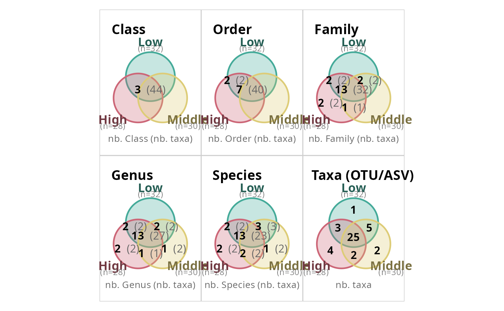
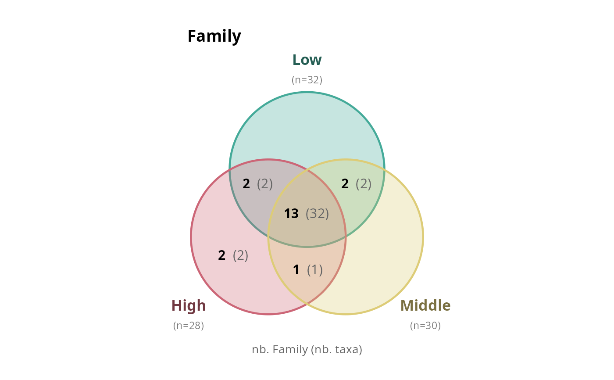
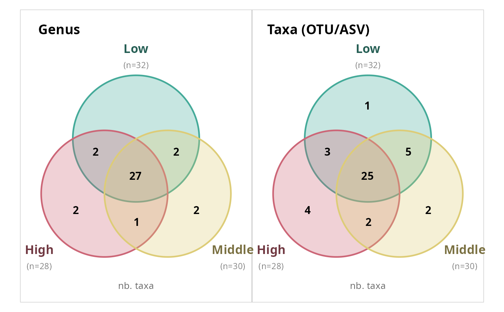
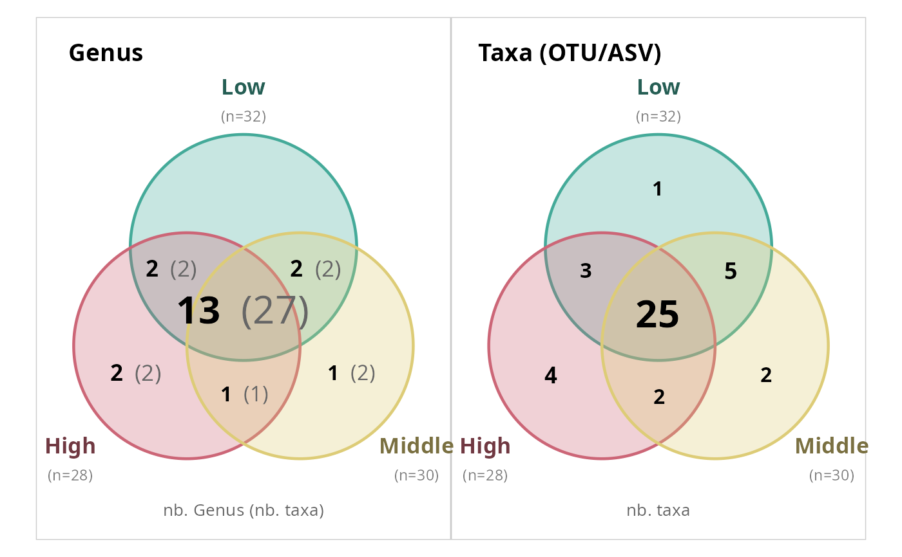
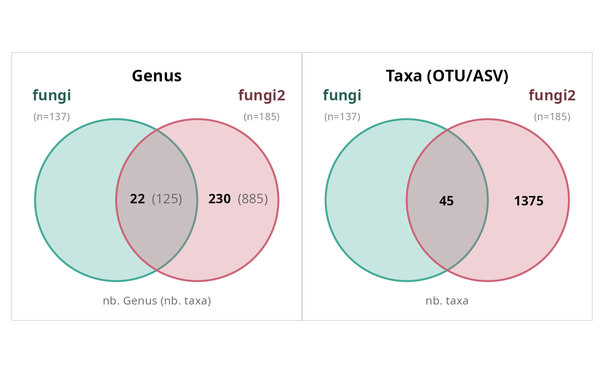

Draws a Venn diagram showing shared and unique taxa (or higher-rank groups) across 2 to 4 levels of a sample variable, using only ggplot2 (no external Venn diagram package needed).
When taxonomic_rank is a character vector of length > 1 (the
default), all ranks are displayed in a single combined figure using
the patchwork package (must be installed). Set combine = FALSE to
get a named list of individual plots instead.
For 2 and 3 groups, circles are used. For 4 groups, ellipses are used to ensure all intersection regions are representable.
Usage
simple_venn_pq(
physeq,
fact = NULL,
min_nb_seq = 0,
taxonomic_rank = c("Class", "Order", "Family", "Genus", "Species"),
na_remove = TRUE,
count_type = c("rank", "taxa", "sequences", "rank_taxa"),
add_nb_samples = TRUE,
fill_alpha = 0.3,
border_size = 0.8,
text_size = 4,
scale_text = FALSE,
hide_zero = TRUE,
label_size = 4.5,
colors = NULL,
show_na_count = FALSE,
count_taxa = TRUE,
match_by = c("refseq", "names"),
combine = TRUE,
verbose = TRUE,
.lpq_n_samples = NULL
)Arguments
- physeq
(phyloseq or list_phyloseq, required) A phyloseq object, or a list_phyloseq object. When a list_phyloseq is provided, it is first merged into a single phyloseq using
merge_lpq()(each original phyloseq becomes one sample) and thefactparameter is automatically set to"source_name".- fact
(character, required when
physeqis a phyloseq) Name of a variable insample_data(physeq)defining the groups (2-4 levels). Ignored whenphyseqis a list_phyloseq.- min_nb_seq
(integer, default 0) Minimum total read count for a taxon to be considered present in a group. A taxon must have strictly more than
min_nb_seqreads in a group to be included.- taxonomic_rank
(character or NULL) Taxonomic rank(s) at which to aggregate (via
phyloseq::tax_glom()) before computing the Venn diagram. Defaults to all standard ranks (Kingdom through Species). UseNULLto skip aggregation and work at ASV/OTU level.- na_remove
(logical, default TRUE) Remove samples with NA in
factand, when aggregating, taxa with NA attaxonomic_rank.- count_type
(character, default
"rank") What to count in each Venn region. One of:"rank": number of unique taxonomic levels (e.g. number of shared Classes). This is the default."taxa": number of ASVs/OTUs assigned to the shared taxonomic levels."sequences": total number of reads for ASVs/OTUs assigned to the shared taxonomic levels."rank_taxa": shows both rank and taxa counts as"nb_rank (nb_taxa)". Ignored whentaxonomic_rankisNULL(ASV-level), where"rank"and"taxa"are equivalent.
- add_nb_samples
(logical, default TRUE) Append sample count to group labels.
- fill_alpha
(numeric, default 0.3) Fill transparency for shapes.
- border_size
(numeric, default 0.8) Border line width.
- text_size
(numeric, default 4) Base size of count labels inside regions.
- scale_text
(logical, default FALSE) If
TRUE, scale the size of count labels proportionally to the count value. Thetext_sizeparameter then acts as the base (minimum) size.- hide_zero
(logical, default TRUE) If
TRUE, hide count labels that are zero (or"0 (0)"whencount_type = "rank_taxa").- label_size
(numeric, default 4.5) Size of group name labels.
- colors
(character or NULL) Vector of colors, one per group. Defaults to a 4-color qualitative palette.
- show_na_count
(logical, default FALSE) If
TRUE, display the number of taxa withNAat the chosentaxonomic_rankin the bottom-left corner of the plot. Whencount_type = "taxa", the sum of all Venn region counts plus the NA count equalsntaxa(physeq). Ignored whentaxonomic_rankisNULL.- count_taxa
(logical, default TRUE) If
TRUE, append a"Taxa"panel to the Venn diagram showing shared and unique individual taxa (ASVs/OTUs) alongside the aggregated taxonomic ranks. A temporaryTaxacolumn is added to the tax_table with each taxon's name as its value. Ignored whentaxonomic_rankisNULL.- match_by
(character, default
"refseq") Passed tomerge_lpq()whenphyseqis a list_phyloseq. One of"refseq"or"names".- combine
(logical, default TRUE) When
taxonomic_rankhas length > 1, combine plots into a single patchwork figure. Set toFALSEto return a named list of individual ggplot objects. Requires the patchwork package.- verbose
(logical, default TRUE) Print a message when no taxa meet the criteria.
Value
A ggplot2 object (single rank), a patchwork object (multiple
ranks with combine = TRUE), or a named list of ggplot2 objects
(multiple ranks with combine = FALSE).
Examples
# Default: all ranks combined in one figure
simple_venn_pq(data_fungi_mini, "Height")

# At genus level only
simple_venn_pq(data_fungi_mini, "Height", taxonomic_rank = "Genus")
# Multiple ranks as a list
plots <- simple_venn_pq(
data_fungi_mini, "Height",
taxonomic_rank = c("Family", "Genus"),
combine = FALSE
)
plots[["Family"]]

# Count ASVs instead of rank levels
simple_venn_pq(data_fungi_mini, "Height",
taxonomic_rank = "Genus", count_type = "taxa"
)

# Scale text by count value
simple_venn_pq(data_fungi_mini, "Height",
taxonomic_rank = "Genus", scale_text = TRUE
)

# From a list_phyloseq object
lpq <- list_phyloseq(list(
fungi = data_fungi_mini,
fungi2 = data_fungi
))
#> ℹ Building summary table for 2 phyloseq objects...
#> ℹ Computing comparison characteristics...
#> ℹ Checking sample and taxa overlap...
#> ℹ Detected comparison type: NESTED_ROBUSTNESS
#> ℹ 137 common samples, 45 common taxa
#> ✔ list_phyloseq created (NESTED_ROBUSTNESS)
simple_venn_pq(lpq, taxonomic_rank = "Genus", count_taxa)
#> Merging 2 phyloseq objects by refseq: 45 + 1420 taxa -> 1420 unique sequences.
